01
Kelvin Loaf Bakery ordering system
An online ordering system for a children’s home bakery, with a customer app and a staff app. In development.
Read the case study ↗I’m a fourth-year BBIT student at Strathmore University. I love UI/UX design, I build full-stack web and mobile apps, and I start by listening to the people who will use them, so more of them can.
I’m looking for an internship where I can learn across tech, with UI/UX as my focus. I interview users, test prototypes with them, and build the whole thing, from the screen to the database.
See how I workAn online ordering system for a children’s home bakery, with a customer app and a staff app. In development.
Read the case study ↗A platform for applying for national ID services, with applicant and admin portals. Complete.
Read the case study ↗An Android companion with sign-up, one-time codes and password reset. In development.
Read the case study ↗Kelvin Loaf Bakery raises income for the children at Kenya Children’s Homes. We are building a place where customers order bread, cakes and pastries online, and where the bakery team runs orders, production and reports.
We stay in touch with the bakery’s clients. We interview them, show them the prototype and check that the ordering flow makes sense to them as we go. What they tell us shapes what we build next.
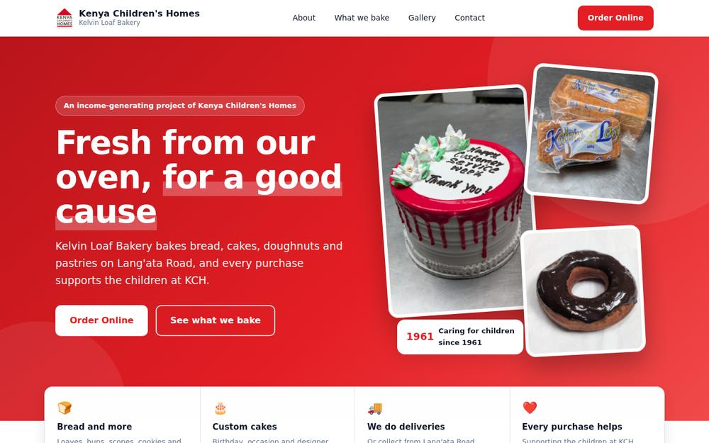
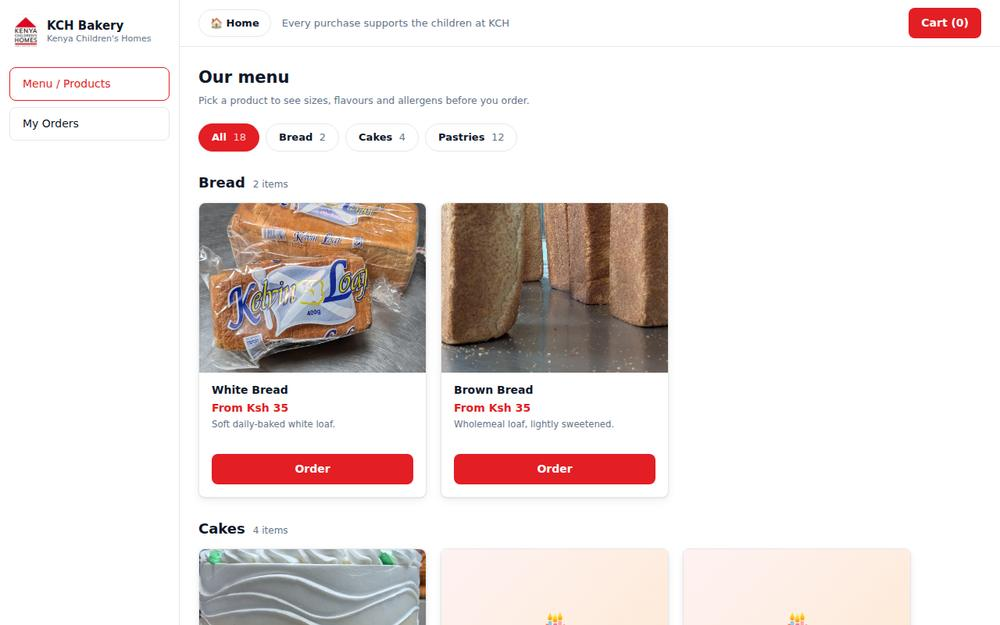
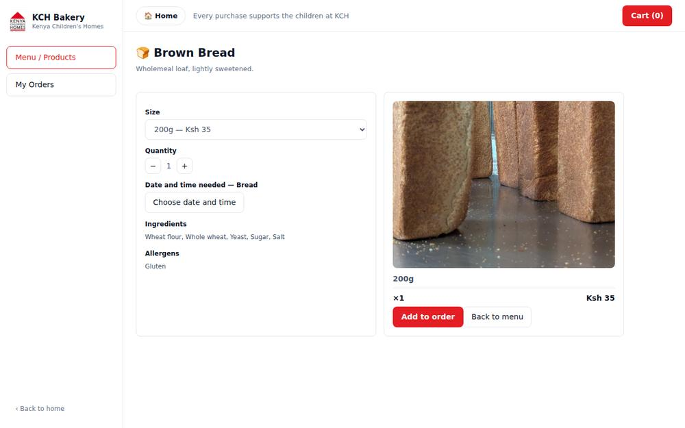
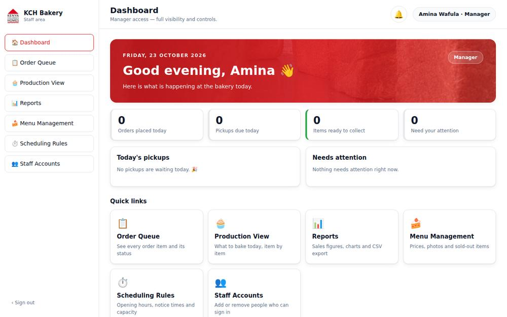
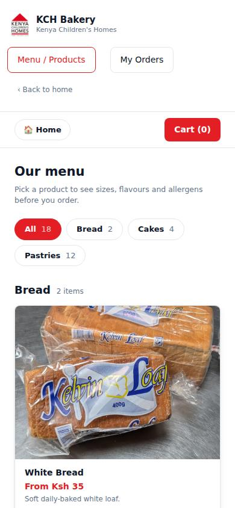
An online platform for applying for national ID services in Kenya. People register, confirm their email with a one-time code, apply for a new, replacement or stolen ID, upload documents, submit payment details and follow their application. Administrators review each application, approve or reject it, post public notices, update homepage content and run reports by date.
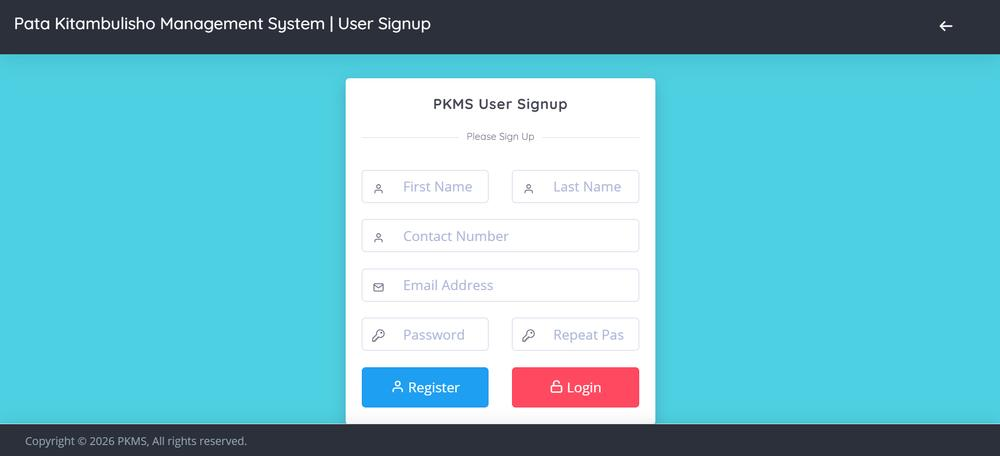
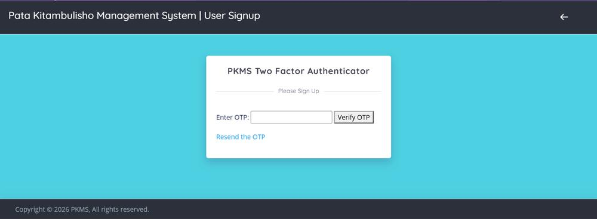
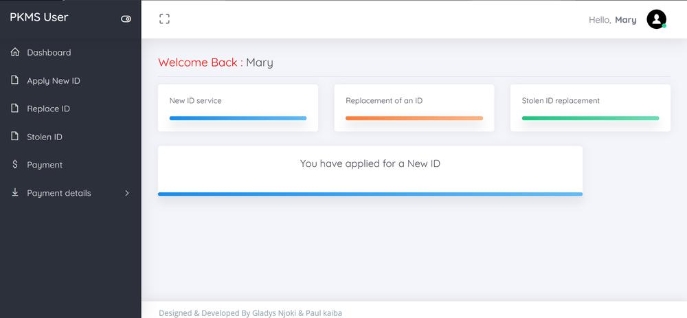
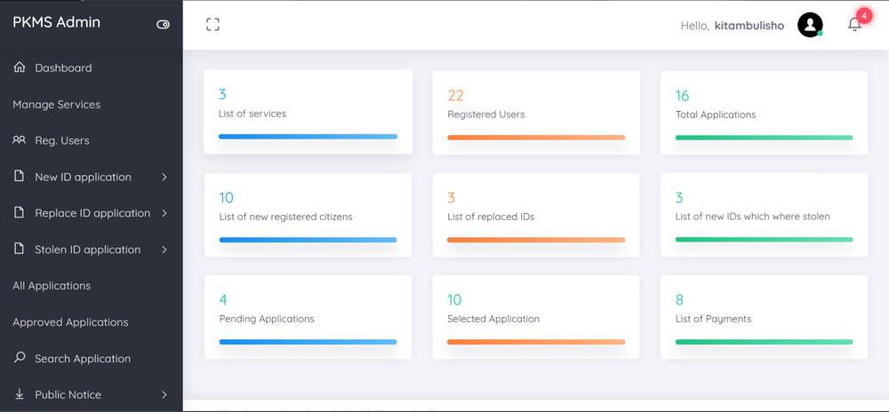
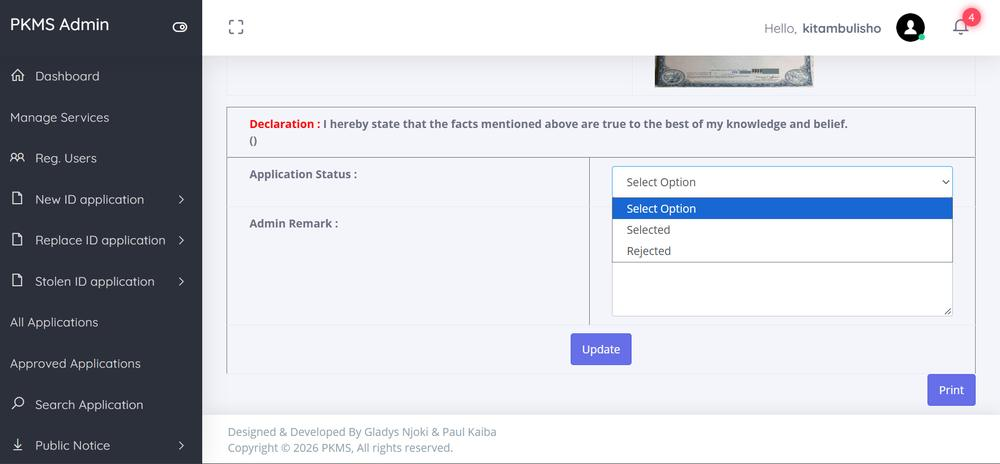
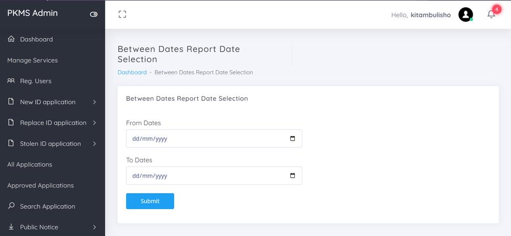
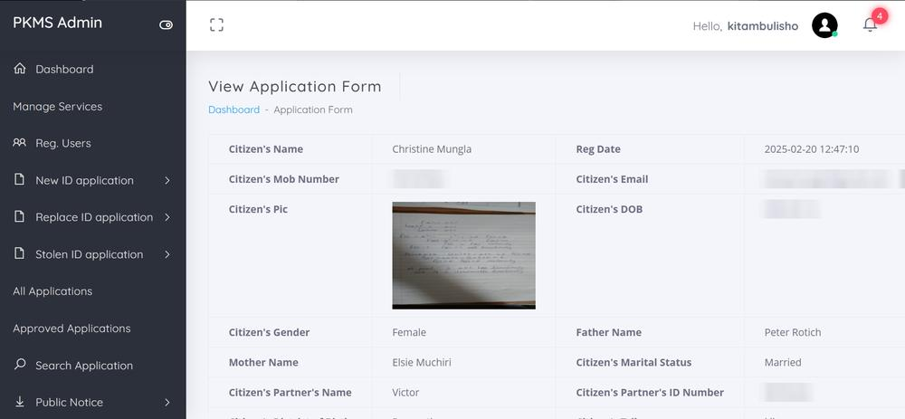
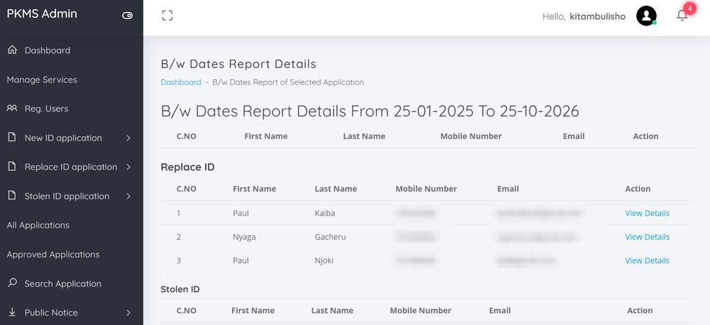
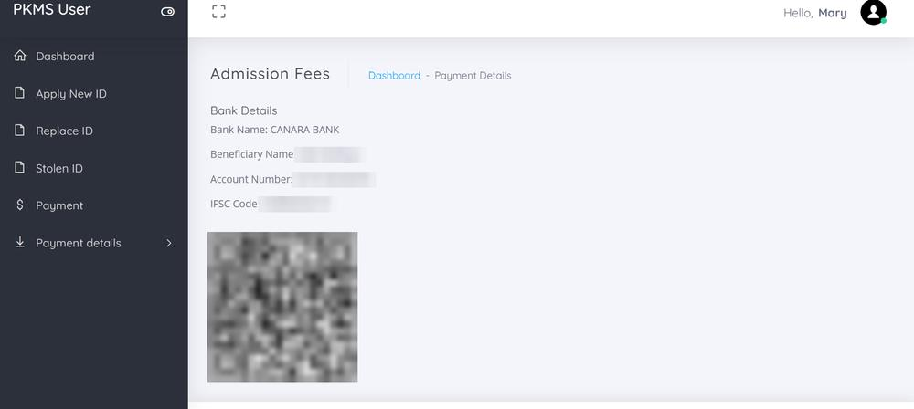
The app signs in through the website’s API, so the same account works in both places.
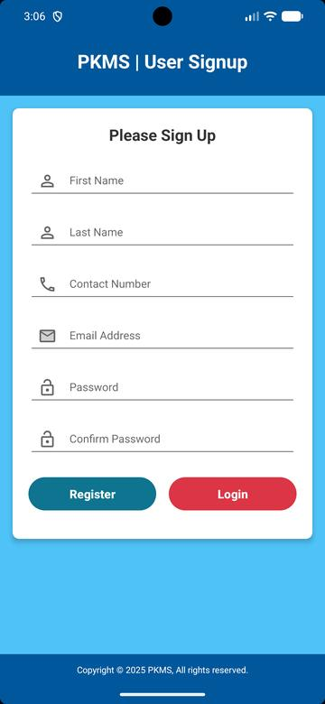
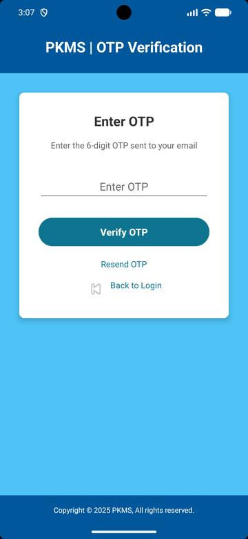
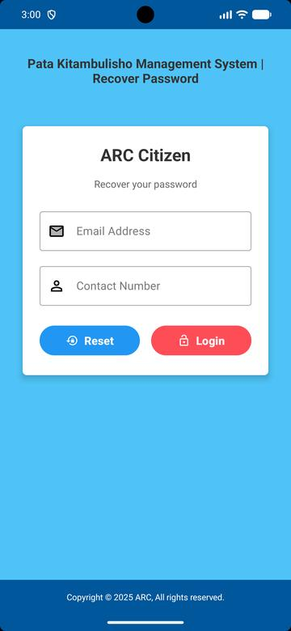
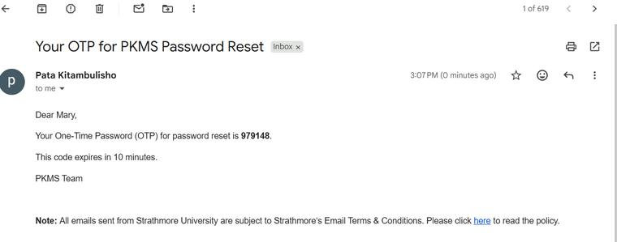
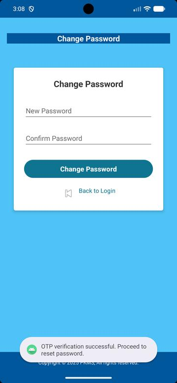
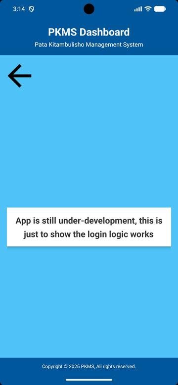
Names, emails and documents in these screens are test data, and contact details are blurred. Uploaded documents are placeholders used to check that uploads work.
HTML, CSS, JavaScript and Bootstrap on the web. Material Design layouts on Android.
PHP for the website, plus a JSON API that the Android app calls.
MySQL stores users, applications, payments and notices for PKMS.
A Kotlin Android app using MVVM and Retrofit to talk to the same backend.
Email one-time-code login, password reset and change password, on both web and app.
Git and GitHub for every project, and automated tests on the bakery system.
On the bakery system we interview the bakery’s clients and walk them through the prototype to check the flow works for them.
Plain language, honest prices like “From Ksh 35”, labelled forms and a clear confirmation at every step.
Ingredients and allergens show before anyone orders, and reset emails say how long a code lasts.
Each role sees only what it needs. Pages reflow on phones, images have alt text and icon buttons have names.
I ran an automated axe-core check. Staff sign-in: 0 issues. Landing page: 2. Ordering app: 2. Automated tools catch only part of the problems, so this is a start.
I list what I’m still fixing, so you can see how I think about quality.
I want to learn across tech, with UI/UX as my focus. I’d love to hear from you.
Get in touchAn internship where I can experience every side of tech and keep growing in UI/UX.